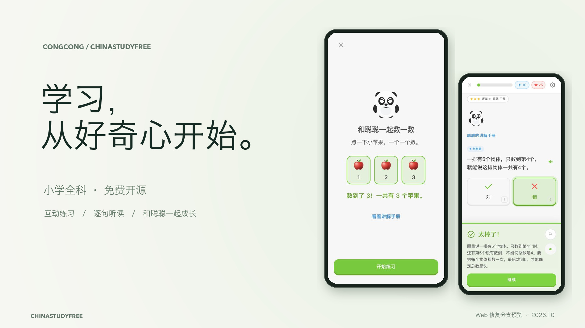

A LITTLE CURIOSITY. A NEW BEGINNING.
学习，
从好奇心开始。
从三个苹果，到课本之外的世界。
和聪聪一起，把今天的好奇变成小小的进步。

本地 Web 修复分支预览 · 2026-10-15。尚未合并或部署。画面取自真实演示操作，不代表当前线上版本或儿童、真机验收。
START SMALL
第一步，简单一点。
找到自己的起点，亲手探索，再看懂每一次反馈。
找到自己的起点
年级选择清楚，继续按钮完整可见。
先动手，再理解
点一下苹果，一个一个数。
知道为什么
答案之外，也有具体的解释。
ROOM TO EXPLORE
让好奇心，有更多去处。
课内练习、课文听读、课外故事与聪聪衣橱。
从容选择
按年级和教材，找到今天的小课。
一步一步前进
教材章节与课程节点放在同一条路径上。
课本原页，逐句听读
把熟悉的课文，再认真读一遍。
在故事里，发现新世界
读完以后，再说说自己的想法。
换一种模样
用学习获得的宝石，给聪聪换装。
每一次尝试，都在进步
没有错题时，也能去巩固一节小课。
选一个故事，一起读
在听与读之间，继续探索。
留下学习足迹
当前浏览器中的记录，不展示虚构成绩。
关于这些画面
采集日期：2026-10-15。版本：codex/ux-quality-repairs 的本地生产导出。桌面默认视口 1280×720，手机 CSS 视口 390×844；受截图服务的页面边界裁切影响，部分图像像素尺寸略小，原始尺寸记入素材清单。手机画面属于浏览器模拟，未声称为真机拍摄。
短片使用实际浏览器界面状态剪辑合成，非连续录屏；只对界面外的背景、边框、标题与镜头转场进行设计。配乐由本地代码合成，不使用第三方音乐、声音克隆或付费内容生成 API。原始截图、源状态、字幕和渲染脚本均随仓库保留。iOS 历史素材在 README 中另行标记。